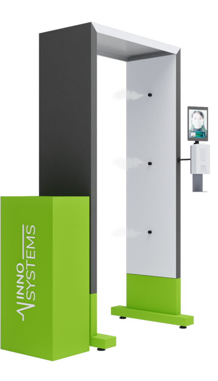

ДЕЗИНФЕКЦИОННЫЕ РАМКИ
“ИННОСИСТЕМС”
ОТ ПРОИЗВОДИТЕЛЯ
ОПТОМ И В РОЗНИЦУ
Быстрая, надежная и экономичная дезинфекция большого потока людей
УЗНАТЬ СТОИМОСТЬКАК ЭТО РАБОТАЕТ?

1
При входе в рамку человека срабатывает датчик движения. Форсунки под высоким давлением распыляют дизенфицирующий раствор
2
Образуемый туман покрывает всю поверхность человека тонкой антибактериальной пленкой
3
Процесс распыления занимает всего 2 секунды и заканчивается автоматически после прохождения через рамку
4
Дезинфекционные рамки «ИнноСистемс» дополнительно можно оснастить камерой распознавания лиц, датчиком температуры